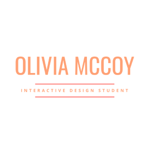

Contact
Olivia McCoy
mccoyog@dukes.jmu.edu
(717) 617-9064
Skills
- Adobe Creative Suite
- Microsoft Office Suite
- WordPress
- HTML / CSS
- Sprout Social
Education
James Madison University 2021
B.A. in Media Arts and Design
Interactive Design concentration
General Business minor
Experience
Jan. 2019 - Present
- Manage Instagram (131k followers), Twitter (61.7k followers) and Facebook (1M likes)
- Identify upcoming trends and opportunities for social media
- Communicate with consumers to build brand love
- Research follower engagement to compile a list of brand influencers
May 2018 - Present
- Lead a Platinum level chapter of 35 women (top 20% of 380+ chapters)
- Correspond with headquarters each week regarding chapter activities
- Edit and upload a minimum of 5 articles per week onto Her Campus' website
- Delegate tasks to executive board members
- Participate in brand partnerships
Jan. 2020 - Present
- Lead a team of 3 campus representatives
- Act as a liaison between Rent the Runway Headquarters and James Madison University
- Host meetings with the team to review marketing strategies and plan 3 events per semester
- Curate 3 posts and 4 stories for Instagram monthly
Aramark | Marketing Intern
Aug. 2018 - May 2019
- Sold over 50 meal plans to students at James Madison University
- Facilitated tabling events around campus to raise awareness of current dining promotions
- Communicated with students about their meal plans and answer any questions they may have
- Collaborated with management to create new promotions